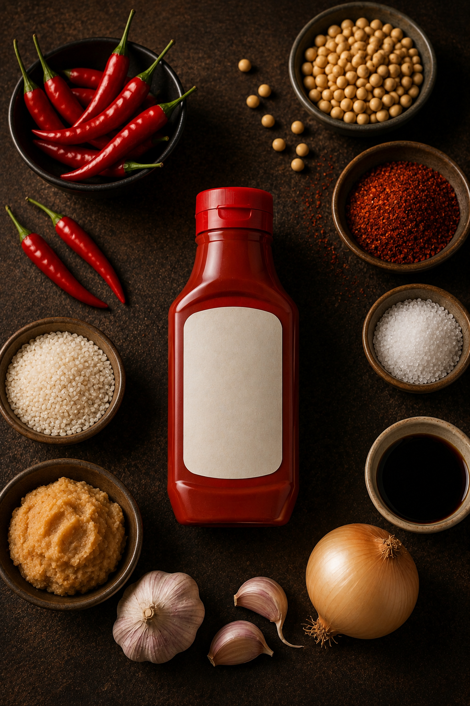
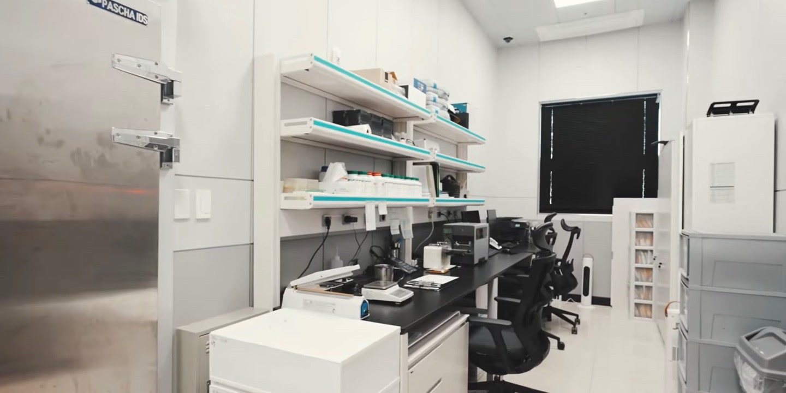
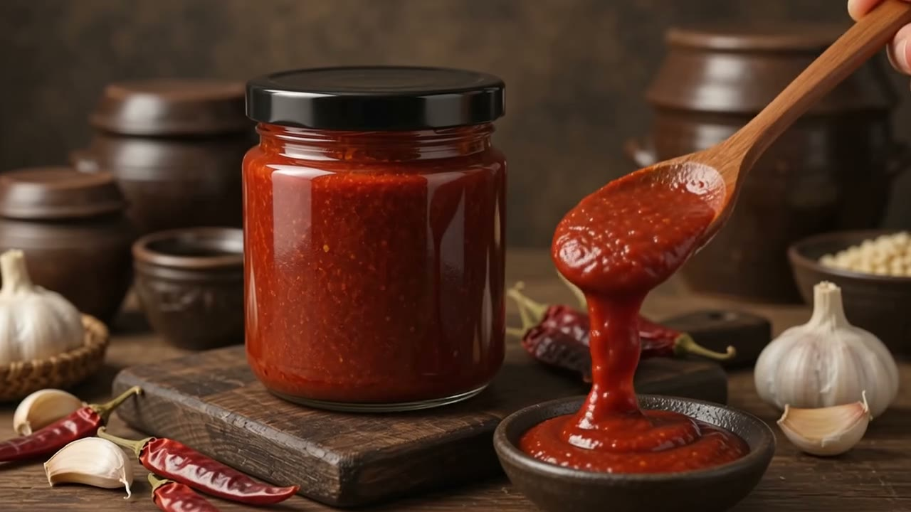

재료에서 시작합니다
재료에서,
마지막 한 술까지.
태양초 고추, 우리콩, 통쌀 — 한 병에 들어갈 재료를 산지에서 직접 고릅니다.

01 · 매일의 주방에서
요리는 쉽게, 맛은 깊게.
나물 무침부터 냉면, 찌개까지 — 소스 하나면 우리 집 주방의 매일이 완성됩니다.

02 · 보이지 않는 곳까지
담는 순간까지, 깨끗하게.
클린룸 생산 라인에서 한 병 한 병 담아 당일 밀봉합니다.

03 · 매일의 한 끼에